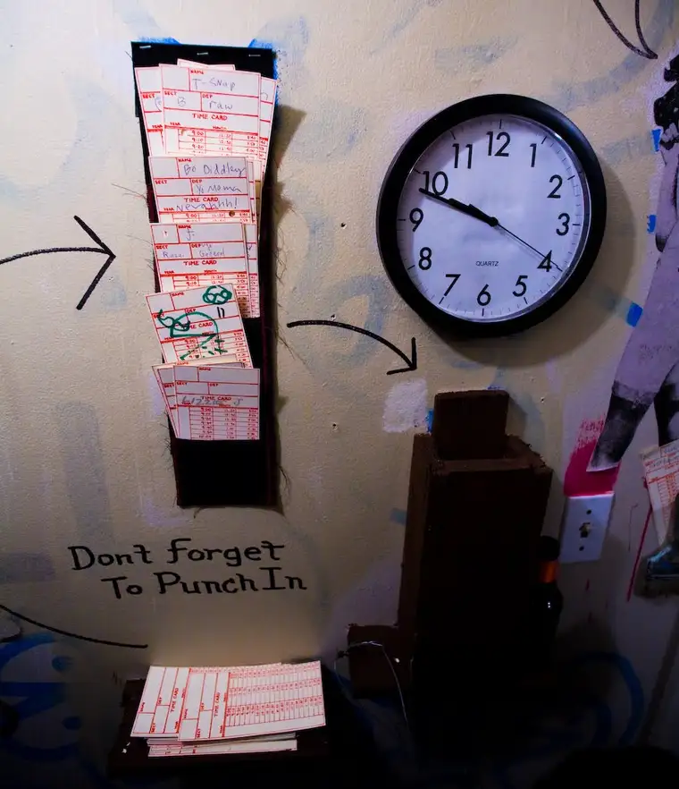

{kind=link}

(Photo: creative commons)I’m still trying to figure out exactly what to call what I do. “Communications specialist” is a title that seems to package it all together quite nicely. But how I describe what I do seems to depend largely on my surroundings.
At the very least, I’d like to challenge anyone who might liken the word freelance to slothfulness. Though there may be some who choose the freelance life so they can sleep in and catch up on daytime dramas, I’ve found life anything but slow-paced and slothful in my first official weeks working from my home office without children about.
We independents all have different reasons for choosing this work. As a mother of five, it made good sense to go this route due largely to the particular logistics of my life. And what I’ve found so far is that my office time feels very focused and concentrated. I can now work in a way that has never been possible before, zeroing in on the projects at hand with minimal distraction.
In these last couple weeks since starting on this path full-fledged, I’ve often imagined myself doing the same work in an office environment, with phones ringing, calls for staff meetings, the copy machine buzzing, and runs to the water cooler all part of the scene. Sure, there are distractions at home, too, but the setup feels much more productive to me. I’m finding I can work fairly intensely on setting up interviews, working on articles and completing necessary office work, but that I inevitably need little breaks like any other worker. When my brain needs to stop for a bit, I throw in some laundry or run upstairs to fix a little lunch. These bursts of reprieve let my mind rest or even work on a problem that needs to be solved, all while I am doing the domestic work that also needs to be done.
I have to say, as I start week three of this new venture, I’m finding that punching the clock freelance style seems a very efficient way to do things. Instead of giving myself to one part of my life at the expense of the other, this feels like a happy blending in which the main areas of my life are getting a proper balance of attention.
It seems the timing is right, too. According to an article in Entrepreneur.com, “Freelance Nation: Outsourcing Your Business Work,” a trend by companies to outsource work is on the rise, and writers are among the top outsourced talent through FreelancersUnion.org, a nonprofit organization that represents 140,000 independent workers.
But in order to find that work, I’ll have to work hard. I won’t have the luxury of a constant paycheck, or a boss specifying what I’m to do with my hours. It will be up to me to go after the work and deliver a product that will benefit my clients, make them feel that hiring me is more than worth their while.
So, no offense Soap Opera Land and Bon-Bon boxes, but you won’t be claiming any of my attention anytime soon.
I’m punched in!
Q4U: Whether you work from home or in an office, what habits have you developed to help you make the best use of your time on the clock?